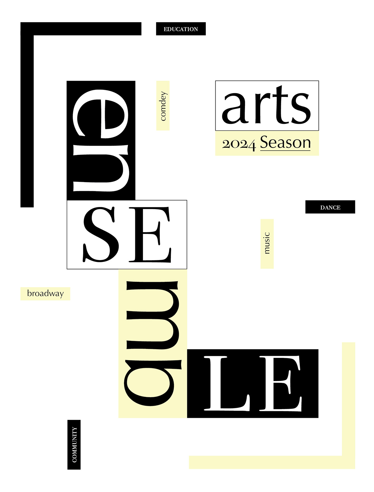
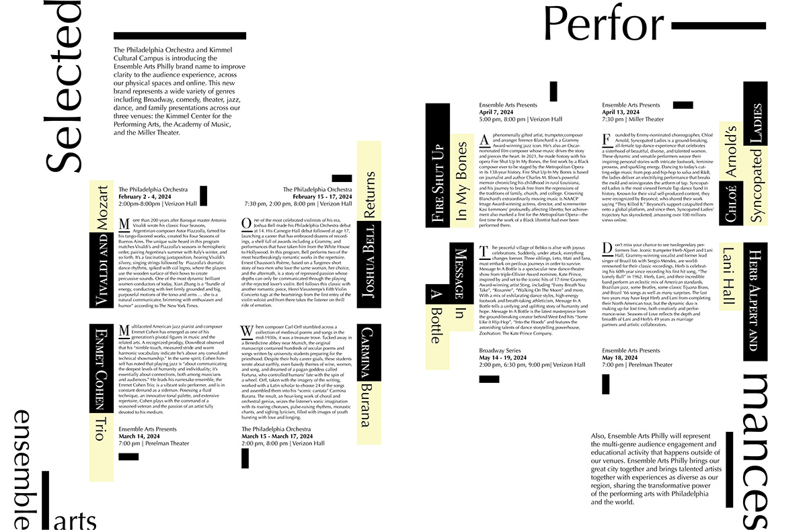
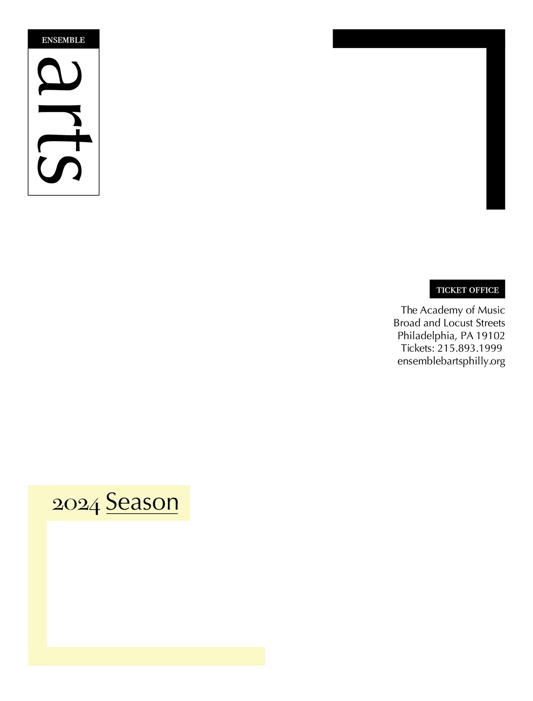
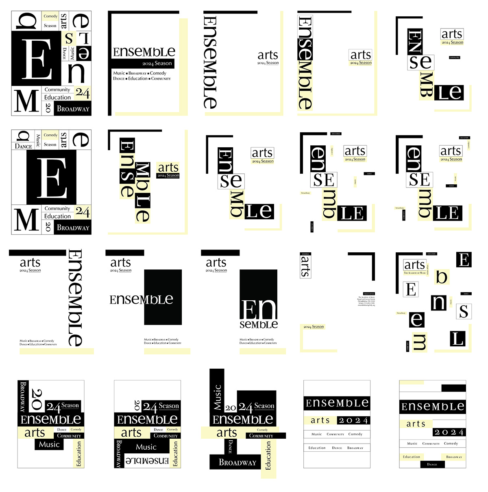

This fictional Ensemble Arts Project is a reflection of how visual systems are represented through a typographic identity—over print, screen, and motion. The universal typographic system resembles the wide variety of programs and shows in the Ensemble Arts. The simplicity of the rectangular elements compliments the purpose of the grid structure.
   